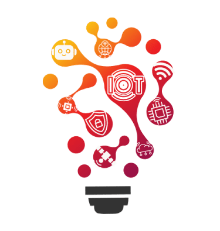
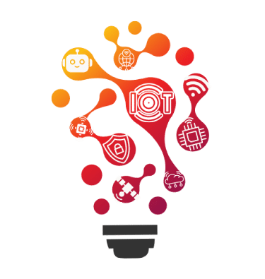
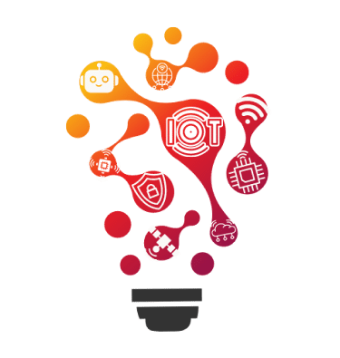

IOTRONICS
- The IOT club of NMIT -

IOTRONICS
- The IOT club of NMIT -

This club is a place where students find the latest information about
topics related to the Internet of Things. Students of the IOTRONICS club
will be offered various programs and activities such as seminars,workshops
,short courses, and many as listed below. The club is supported by internal
and external experts who assist the students in strategizing and organizing
activities to help them gain knowledge and skills related to lot. The club
aims to guide students and prepare them to pursue their professional careers
in industries specializing based on loT.

FOCUSES
Cyber Security
Mechatronics
iBMS (Integrated Building Management System)
Energy Management
Automation
Electrical Panel Design (LT panel, etc.)
Health Monitoring